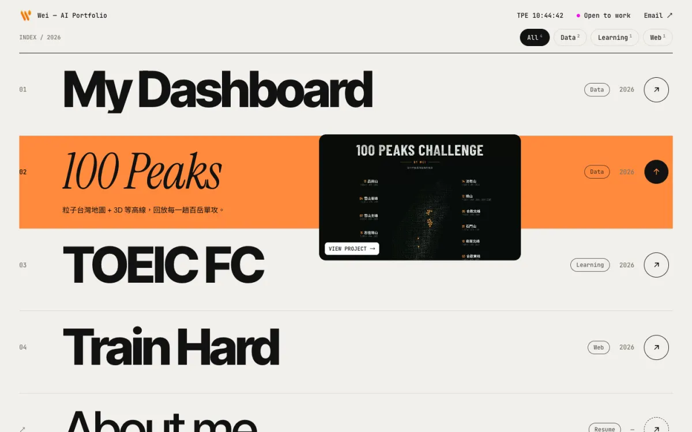
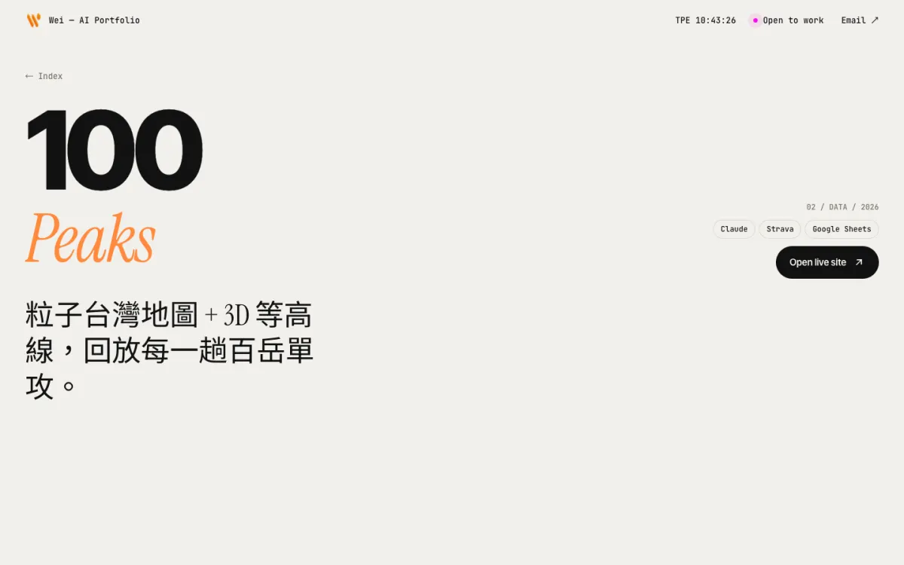
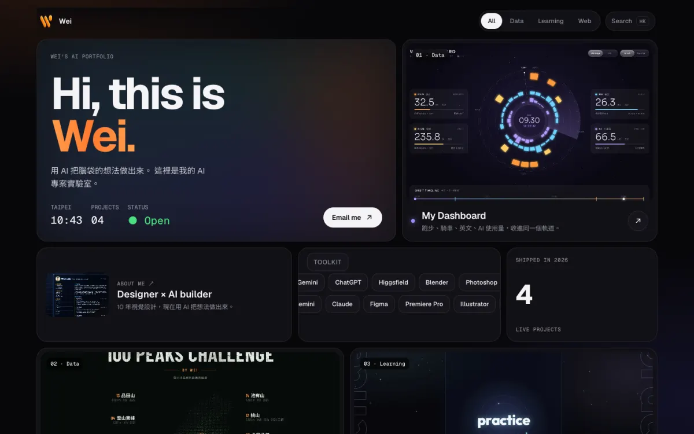
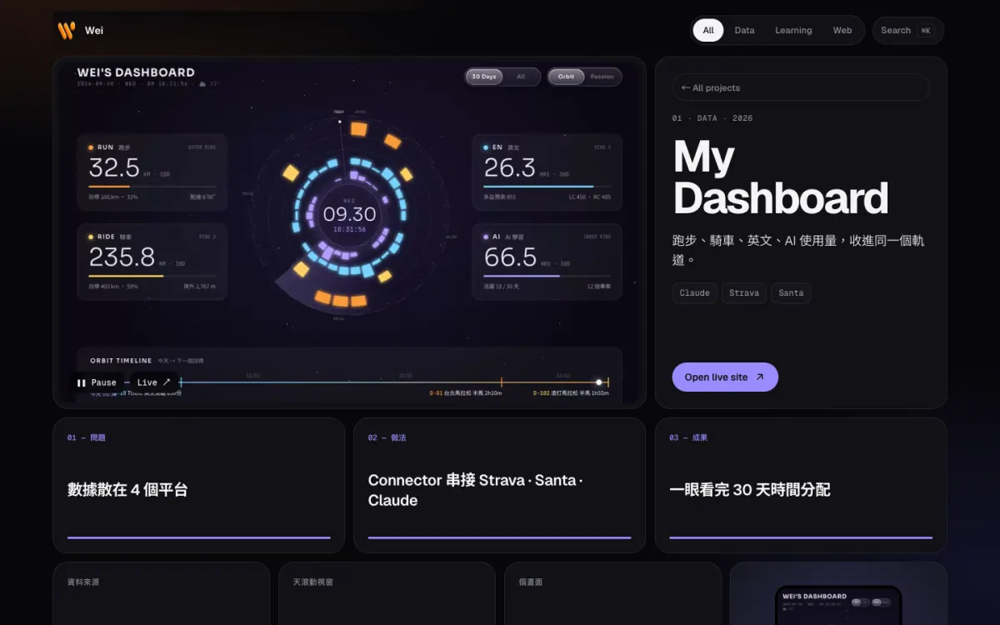
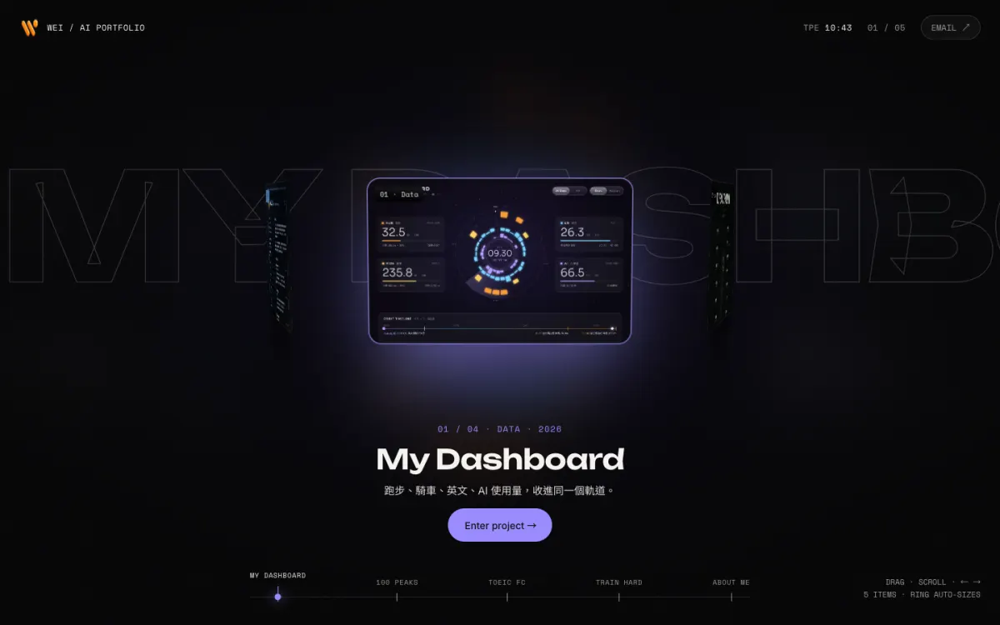
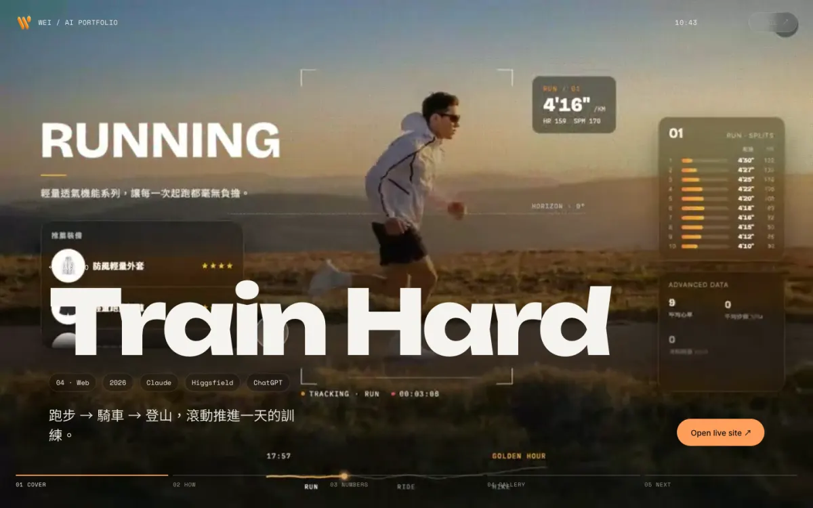

hover → 專案頁每個方向都包含「主頁 + 專案頁」，可以直接點進去玩。內容一律使用各網站 2026/09/30 的最新截圖與錄影；Sport Journey 已換成 100 Peaks，Digital Resume 改為 About me 卡片直連履歷。


hover → 專案頁

hover → 專案頁

hover → 專案頁| A · KINETIC INDEX | B · BENTO OS | C · CINEMATIC ORBIT | |
|---|---|---|---|
| 第一印象 | 設計師品味、排版感 | 科技感、資訊豐富 | 最有 motion graphic 衝擊力 |
| 專案頁文字量 | 1 句 + 3 行步驟 + 3 個數字 | 同左，切成小卡 | 同左，一章一件事 |
| 專案變多時 | ★★★ 清單直接往下長，20 個也可以 | ★★★ 自動排版，加分類也不亂 | ★★ 環會自動變大，建議 12 個以內 |
| 手機體驗 | 變成影片卡片清單 | 單欄卡片 | 環縮小，專案頁改直向 |
| 風險 | 淺色和專案的暗色截圖反差大 | 跟現版差異感較小 | 較重，需要控制影片大小 |
三個方向共用同一份資料 data.js。新增專案時只要多加一筆（標題、一句話、三行步驟、三個數字、截圖、影片），三種版型都會自動排好，不用再寫長篇文案。選定方向後，我會把它接到現有的 build.py 流程，產出可以靜態部署的正式站。